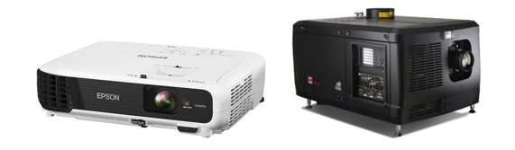

Projektorok
A projektor a számítógéptől vagy más okos eszköztől kapott képi adatot fény formájában jeleníti meg az előtte lévő felületre. A felület kiválasztásánál ügyelnünk kell arra, hogy az elég világos legyen, ellenkező esetben a kivetített kép olvashatatlan lesz. Ez a fő oka, hogy általában fehér színű vászonra vagy falra vetítsük ki a képet. A vetítőket a mennyezetre rögzítjük, vagy pedig sima felszínnel rendelkező tárgyak felületére rakjuk őket. Az újabb típusúak HDMI bemeneti csatlakozót használnak, a régebbek VGA-szabványt. Néhány vetítő Wifi és Bluetooth támogatással is fel van szerelve.
Két vetítési formát különböztetünk meg:
Elülső vetítés: Az átlag felhasználók és a mozik is ezt a megoldást használják. A mozikban a projektor a közönség felett helyezkedik el, erről a pozícióról vetíti a filmet a vászonra.
Hátsó vetítés: A projektor a vászon mögül szolgáltassa a képet. Előnye az, hogy jobb kontraszt biztosít. Hátránya, hogy nagyobb helyre van szüksége. Általában szabadtéren használatos, ahol a hely nem jelent problémát.
Felhasználási területei
Felhasználásától függően több méretben is elérhetőek. Az irodákban és az iskolákban használatosak általában prezentációk megjelenítésére szolgálnak. Relatívan közel helyezkednek el a vetíteni szándékozott felület előtt, ezért erre a célra megfelelnek a kisebb méretű projektorok, amelyek súlya 7 kg körül mozog. A mozikban legtöbbször 15m x 6,5m-es filmvásznakat használnak, ezért a vetítőket messzebb helyezik el a vászontól, ezáltal nagyobb teljesítménnyel kell rendelkezniük. Erre a célra használatosak elérik a 155 kg-mos tömeget.
Bal oldalon az irodákban, jobb oldalon a mozikban használatos vetítő látható
Főbb típusai
A projektorok különböznek méretben, sebességben és természetesen árban is.
DLP projektor
A DLP kivetítők fő alkotó része egy digitális fényvisszaverő lapka, amely millió apró kicsi tükröt tartalmaz. Attól függően, hogy sötét vagy világos pixelt akarunk létrehozni, a tükrök távolodhatnak vagy ellenkező esetben közeledhetnek a fényforráshoz. A lapkára a fényt egy izzó táplálja, a visszaverődött fénysugár áthalad egy forgó színes keréken, s így kapjuk meg a kívánt színárnyalatokat. Ez az egy lapkás modellek működési elve. A DLP kivetítők következő generációja három fényvisszaverő lapkát tartalmaz. Ez a típus egy prizma segítségével az izzótól kapott fényt a három alapszín valamelyikére ossza fel (piros, zöld vagy a kék). A kapott fénysugarak áthaladnak a színükhöz tartozó lapkán. A fényvisszaverők által tükrözött fénysugarakat egy lencsével egyesítik és kirajzolódik a felhasználó által áhított kép. Ezek a modellek találhatóak meg a mozi rendszerekben és a nagy helyszíni kivetítőkben, mivel képesek akár 35 billió szín megjelenítésére. Ez miatt az áruk elég magasra rúghat.
Előnyei:
- Magas kontraszt: A mélyfekete miatt népszerűek házi mozi rendszerekben.
- Hordozhatóság: Az egy lapkás modellek, kis helyet foglalnak.
Hátrányai:
- Szivárványos hatás: Az egy lapkás modelleknél a színeket egy forgó színes kerék szolgáltatja, ezáltal a kép szélén szivárvány színű csíkok fedezhetőek fel.
LCD projektor
A kivetítők 3 darab folyadékkristályos kijelzőt kombinálnak, ugyanazt a technológiával rendelkező kijelzőt, amit a televíziók vagy a monitorok használnak. Egy képet többlépcsős folyamatban készítenek A vetítőben három darab tükör található. A tükrök úgy vannak kialakítva, hogy csak egy bizonyos fény hullámhosszúságot legyenek képesek tükrözni. Az izzóból származó fényt ezeknek a tükröknek a segítségével osszák fel vörös, kék és zöld színű fénysugarakra. Mind a három fénysugarat a hozzátartozó folyadékkristályos kijelzőn továbbítanak keresztül, amelyek ennek hatására egy elektromos jelet vesznek fel. A jel utasítja a kristályokat, hogy a kívánt kép létrehozásához, hogyan kell a képernyőn a képpontokat elrendezni. Mind a három folyadékkristályos kijelző létrehozza ugyanazt a képet, de mind a három eltérő árnyalatú lesz. Ennek az az oka, hogy a kijelzők különböző elektromos jeleket vettek fel. A kapott képeket ezután egy prizmában egyesítik. Ez a metódus 16,7 millió színt képes megjeleníteni.
Előnyei:
- Éles kép
- Energiafogyasztás
Hátrányai:
- Kontraszt: Nem képesek a teljesen fekete szín megjelenítésére.
- Terjedelmes: Több alkatrészből épül fel, ezáltal nagyobb méretű és kevésbé hordozható
- Halott képpontok: Egy vagy több pixel hajlamos önmagát be vagy ki kapcsolgatni, ez rontsa a felhasználó élményt.
LCoS projektor
Ez a technológia ötvözi az előző két vetítő technológia működési elvét. Az LCoS projektorokban egy fényvisszaverő lapra folyadékkristályokat helyeznek el. Feszültség hatására a kristályok kinyílnak és átengedik a fényt, ami a tükröződő rétegről visszaverődik. Tehát az áteresztett fény mennyiségét a feszültség érték növelésével vagy csökkentésével korrigálhassuk. A visszaverődött fényt tükrök segítségével három különböző színű fénynyalábra osszák fel. Ezek a nyalábok áthaladnak a piros a kék vagy a zöld szín modulációját végző lapka egyikén, amelyekről a fénysugarak visszaverődnek. A három különböző színű sugarat egy prizma segítségével egyesítik és megkapjuk a kívánt képet.
Előnyei:
- Élés természetes színek
- Szivárvány effektus hiánya
Hátrányai:
- Ár
- Kontraszt
- Rövid élettartam
Lézer projektor
A fent felsorolt technológiáknál a fényforrást a projektorban található fehér izzó szolgáltatta. Ez a megoldás nagyon energia pazarlónak bizonyult, mivel a szolgáltatott fény 80%-a kárba veszett. A lézer projektorok erre a problémára jelentenek megoldást. A projektorban három darab lézer található. A lézerek képesek a piros, a zöld és a kék szín azonnali előállításara. Ezáltal nincs szükségünk különböző tükrökre, hogy a bejövő fényből kinyerjük a fent említett színeket. A három különböző színű lézer fényét lencsék segítségével egyesítik és megkapjuk a kívánt képet. Ez a megoldás nagyon sokat javít az energiafelhasználáson és a kapott kép is fényesebb lesz. Az összes új technológia rendelkezik egy nagy hátránnyal, hogy csak horribilis összegekért beszerezhetőek. Ez alól a lézer projektorok se kivételek. Mindenki örömére, az átlag felhasználó számára is elérhetővé tették ezzel a technológiával felszerelt kivetítőket, persze ehhez egy kis “csalást “ kellet beiktatniuk a rendszerbe. A három darab különböző színű lézert, két darab kék színűvel helyettesítették. Az egyik lézer fényét foszforon vezetik keresztül, amely a kék fényt egy zöld és egy piros színre alakítsa át. Ez a megoldás természetesen ront a kép minőségén, de az árból sokat képes lefaragni.
Előnyei:
- Fényes színek a megjelent képeken
- Energiafogyasztás
- Élettartam
Hátrányai:
- Nagyon magas ár